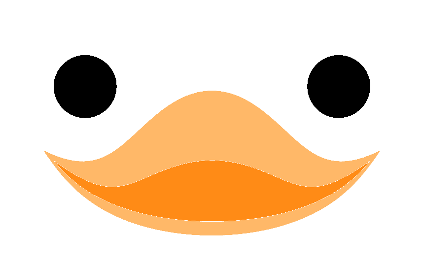
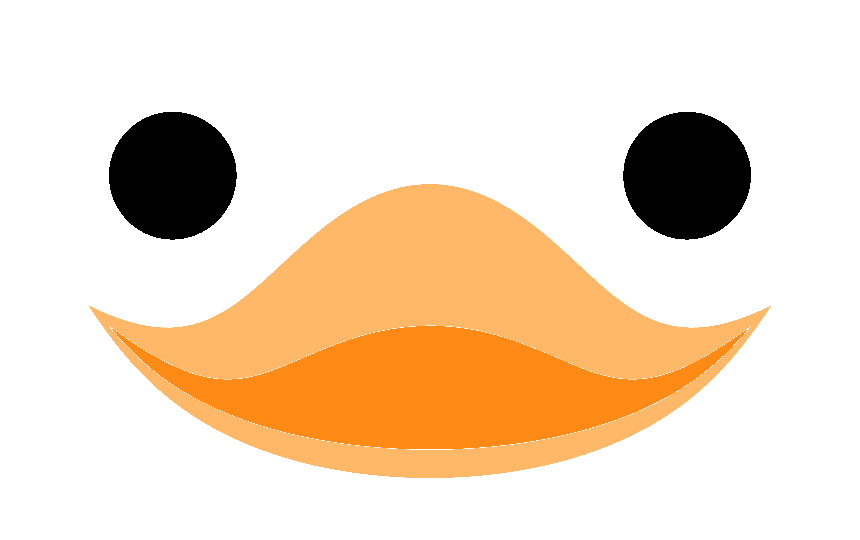

Skip to main content
Back to top
Ctrl
+
K
 
Github
Contiributing
API references
Feature details & options
Search
Ctrl
+
K
GitHub
PyPI
Search
Ctrl
+
K
Github
Contiributing
API references
Feature details & options
GitHub
PyPI
Section Navigation
gustaf
gustaf.create
gustaf.create.edges
gustaf.create.edges.from_data
gustaf.create.edges.from_vertices
gustaf.create.faces
gustaf.create.faces.box
gustaf.create.faces.edges_as_quad
gustaf.create.faces.to_quad
gustaf.create.faces.to_simplex
gustaf.create.faces.vertex_normals
gustaf.create.vertices
gustaf.create.vertices.raster
gustaf.create.volumes
gustaf.create.volumes.box
gustaf.edges
gustaf.edges.Edges
gustaf.edges.Edges.centers
gustaf.edges.Edges.dashed
gustaf.edges.Edges.referenced_vertices
gustaf.edges.Edges.remove_unreferenced_vertices
gustaf.edges.Edges.shrink
gustaf.edges.Edges.single_edges
gustaf.edges.Edges.sorted_edges
gustaf.edges.Edges.to_vertices
gustaf.edges.Edges.unique_edges
gustaf.edges.Edges.update_edges
gustaf.edges.Edges.update_elements
gustaf.edges.Edges.const_edges
gustaf.edges.Edges.const_elements
gustaf.edges.Edges.edges
gustaf.edges.Edges.elements
gustaf.edges.Edges.kind
gustaf.edges.Edges.whatami
gustaf.edges.EdgesShowOption
gustaf.faces
gustaf.faces.Faces
gustaf.faces.Faces.dashed
gustaf.faces.Faces.edges
gustaf.faces.Faces.single_faces
gustaf.faces.Faces.sorted_faces
gustaf.faces.Faces.to_edges
gustaf.faces.Faces.to_subelements
gustaf.faces.Faces.unique_faces
gustaf.faces.Faces.update_edges
gustaf.faces.Faces.update_faces
gustaf.faces.Faces.whatareyou
gustaf.faces.Faces.BC
gustaf.faces.Faces.const_edges
gustaf.faces.Faces.const_faces
gustaf.faces.Faces.faces
gustaf.faces.Faces.kind
gustaf.faces.Faces.whatami
gustaf.faces.FacesShowOption
gustaf.helpers
gustaf.helpers.data
gustaf.helpers.data.make_tracked_array
gustaf.helpers.data.ComputedData
gustaf.helpers.data.ComputedMeshData
gustaf.helpers.data.DataHolder
gustaf.helpers.data.TrackedArray
gustaf.helpers.data.Unique2DFloats
gustaf.helpers.data.Unique2DIntegers
gustaf.helpers.data.VertexData
gustaf.helpers.notebook
gustaf.helpers.notebook.get_shape
gustaf.helpers.notebook.K3DPlotterN
gustaf.helpers.options
gustaf.helpers.options.make_valid_options
gustaf.helpers.options.Option
gustaf.helpers.options.SetDefault
gustaf.helpers.options.ShowOption
gustaf.helpers.raise_if
gustaf.helpers.raise_if.invalid_inherited_attr
gustaf.helpers.raise_if.ModuleImportRaiser
gustaf.io
gustaf.io.default
gustaf.io.default.load
gustaf.io.ioutils
gustaf.io.ioutils.abs_fname
gustaf.io.ioutils.check_and_makedirs
gustaf.io.meshio
gustaf.io.meshio.export
gustaf.io.meshio.load
gustaf.io.mfem
gustaf.io.mfem.export
gustaf.io.mfem.format_array
gustaf.io.mfem.load
gustaf.io.mixd
gustaf.io.mixd.export
gustaf.io.mixd.load
gustaf.io.mixd.make_mrng
gustaf.io.nutils
gustaf.io.nutils.export
gustaf.io.nutils.load
gustaf.io.nutils.to_nutils_simplex
gustaf.settings
gustaf.show
gustaf.show.interpolate_vedo_dictcam
gustaf.show.make_showable
gustaf.show.show
gustaf.utils
gustaf.utils.arr
gustaf.utils.arr.bounds
gustaf.utils.arr.bounds_diagonal
gustaf.utils.arr.bounds_mean
gustaf.utils.arr.bounds_norm
gustaf.utils.arr.close_rows
gustaf.utils.arr.cross3d
gustaf.utils.arr.derivatives_to_normals
gustaf.utils.arr.enforce_len
gustaf.utils.arr.is_one_of_shapes
gustaf.utils.arr.is_shape
gustaf.utils.arr.make_c_contiguous
gustaf.utils.arr.rotate
gustaf.utils.arr.rotation_matrix
gustaf.utils.arr.rotation_matrix_around_axis
gustaf.utils.arr.select_with_ranges
gustaf.utils.arr.unique_rows
gustaf.utils.connec
gustaf.utils.connec.faces_to_edges
gustaf.utils.connec.hexa_to_quad
gustaf.utils.connec.make_hexa_volumes
gustaf.utils.connec.make_quad_faces
gustaf.utils.connec.range_to_edges
gustaf.utils.connec.sequence_to_edges
gustaf.utils.connec.sequentialize_edges
gustaf.utils.connec.sorted_unique
gustaf.utils.connec.subdivide_edges
gustaf.utils.connec.subdivide_quad
gustaf.utils.connec.subdivide_tri
gustaf.utils.connec.tet_to_tri
gustaf.utils.connec.volumes_to_faces
gustaf.utils.log
gustaf.utils.log.configure
gustaf.utils.log.debug
gustaf.utils.log.info
gustaf.utils.log.prepended_log
gustaf.utils.log.warning
gustaf.utils.tictoc
gustaf.utils.tictoc.Tic
gustaf.vertices
gustaf.vertices.Vertices
gustaf.vertices.Vertices.bounds
gustaf.vertices.Vertices.bounds_diagonal
gustaf.vertices.Vertices.bounds_diagonal_norm
gustaf.vertices.Vertices.concat
gustaf.vertices.Vertices.copy
gustaf.vertices.Vertices.merge_vertices
gustaf.vertices.Vertices.remove_vertices
gustaf.vertices.Vertices.select_vertices
gustaf.vertices.Vertices.show
gustaf.vertices.Vertices.showable
gustaf.vertices.Vertices.unique_vertices
gustaf.vertices.Vertices.update_vertices
gustaf.vertices.Vertices.const_vertices
gustaf.vertices.Vertices.kind
gustaf.vertices.Vertices.show_options
gustaf.vertices.Vertices.vertex_data
gustaf.vertices.Vertices.vertices
gustaf.vertices.Vertices.whatami
gustaf.vertices.VerticesShowOption
gustaf.volumes
gustaf.volumes.Volumes
gustaf.volumes.Volumes.faces
gustaf.volumes.Volumes.sorted_volumes
gustaf.volumes.Volumes.to_faces
gustaf.volumes.Volumes.unique_volumes
gustaf.volumes.Volumes.update_faces
gustaf.volumes.Volumes.update_volumes
gustaf.volumes.Volumes.whatareyou
gustaf.volumes.Volumes.const_faces
gustaf.volumes.Volumes.const_volumes
gustaf.volumes.Volumes.kind
gustaf.volumes.Volumes.volumes
gustaf.volumes.VolumesShowOption
Library References
<no title>
gustaf
gustaf.helpers
gustaf.helpers.notebook
gustaf.helpers.notebook.K3DPlotterN
gustaf.helpers.notebook.K3DPlotterN.close
gustaf.helpers.notebook.K3DPlotterN.close
#
K3DPlotterN.
close
(
)
[source]
#
Closes all vedo.Plotters
On this page
K3DPlotterN.close()
This Page
Show Source